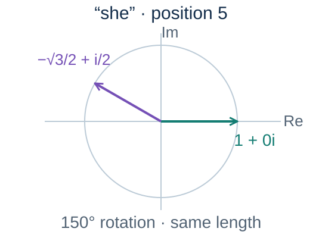
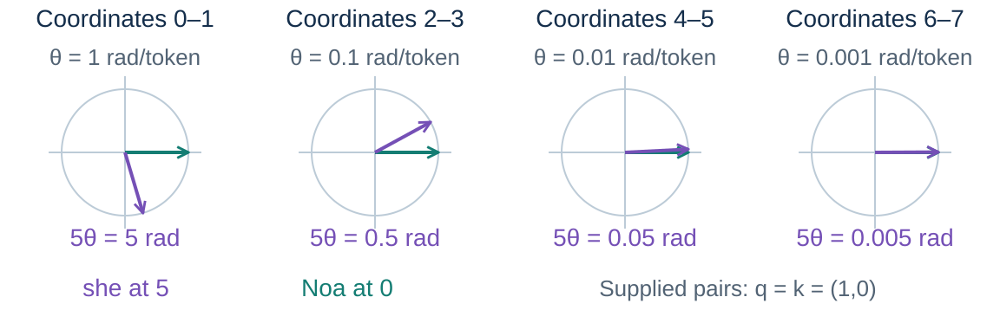
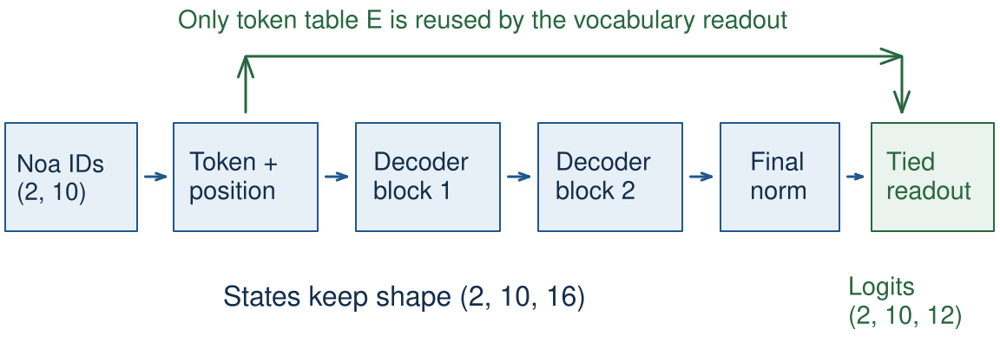
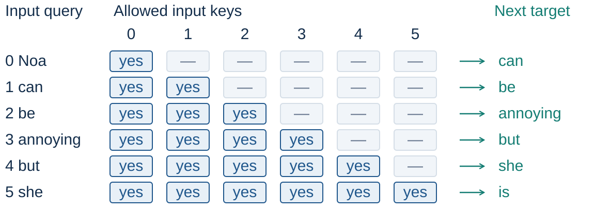

CS40008.01 · NLP and LLMs · Lecture 05
注意力与 Transformer
Attention and the Transformer · 复旦大学数据科学学院 · Baojian Zhou · 2026-10-10
这节课回答一个问题：注意力如何选择上下文，又是如何搭成整个 Transformer 的？ 从自注意力、Q/K/V 投影、位置编码（正弦与 RoPE），到多头注意力、残差、LayerNorm、FFN， 最后组装出一个能跑的模型，并逐条读懂 2017 年那篇原始论文的实验证据。
这份笔记整理自课程公开课件（baojian.github.io/llm-26-fall/slides/lecture-05/）。
每节标题后的标签含义：
- 课件 — 幻灯片正文里的内容（含公式、表格、示例数值）。
- 讲者备注 — 幻灯片
Note:里的讲者备注，相当于老师课堂上的口头讲解与提醒。 - 补充 — 课件只有图或只有结论、没有展开的地方，我补的推导、验算与几何直觉。
这节课的幻灯片里有大量交互式示意图（网页上靠 JavaScript 现场绘制）。 本笔记把它们重画成静态 SVG，并在每张图下面补齐课件没有写出来的公式推导和数字验算。 老师特别提醒的易错点，用橙色框单独标出。
贯穿全讲的例子是一个编造的句子：
Noa can be annoying but she is a great cat.
位置 0–5 是 Noa, can, be, annoying, but, she，这是「前缀」；
位置 6 的 is 是下一个目标词。
所有注意力示例都围绕「she 这个位置能看谁」展开——
这正好把回指（she → Noa）和因果掩码（不能看 is）两件事放在同一个例子里讲清楚。
目录
- 第一部分 · 自注意力与位置信息
- 第二部分 · 多头注意力与 Transformer 块
- 第三部分 · 一个可运行的模型与论文证据
- 3.1 从原始文本到模型输入
- 3.2 小到能看清的模型
- 3.3 可学习的绝对位置
- 3.4 数一个块的参数
- 3.5 组装语言模型
- 3.6 数整个语言模型（E04）
- 3.7 对角线是允许的
- 3.8 从 logits 算 next-token 损失
- 3.9 未来能改变前缀吗（E05）
- 3.10 玩具批次无法到达零损失
- 3.11 拟合检查过的模型
- 3.12 比较归一化顺序
- 3.13 注意力矩阵按平方增长
- 3.14 三种配置要分开
- 3.15 Attention Is All You Need · 2017
- 3.16 翻译数据与模型配置
- 3.17 编码器参数计数（E06）
- 3.18 翻译质量与训练成本
- 3.19 论文里哪些选择重要
- 3.20 翻译之外：成分句法分析
- 3.21 长序列代价的后续工作
- 附录
第一部分 · 自注意力与位置信息
第一节课 45 分钟：先把「注意力」从循环模型的语境里抽出来， 让它作用在同一条序列内部；然后解决一个新问题—— 自注意力本身对顺序完全不敏感，位置信息必须另外注入。
1.1 回顾循环编码器–解码器注意力 课件
$$e_{t,j}=a(s_{t-1},h_j),\qquad \alpha_t=\operatorname{softmax}_{\text{all source}}(e_t),\qquad c_t=\sum_j\alpha_{t,j}h_j$$

循环注意力里，查询来自解码器（$s_{t-1}$）， 键和值来自编码器（$h_j$）——两个不同的序列。
自注意力只改了一件事：查询、键、值全部来自同一条序列的当前状态。 这就是「self」的含义。
| 循环注意力 | 自注意力 | |
|---|---|---|
| 查询来源 | 上一个解码器状态 | 本序列的某个位置 |
| 键/值来源 | 编码器全部状态 | 本序列的全部位置 |
| 打分函数 | 加性网络 | 缩放点积 |
| 共同点 | 都沿「被查询的那条轴」做 softmax，都构成加权和 | |
另外还有第三种：交叉注意力（cross-attention）， 查询来自解码器、键值来自编码器——就是 2017 年原版 Transformer 解码器里的第二个注意力子层 （见 §2.6）。
1.2 一个 token 的上下文 课件
she 指的是位置 0 的 Noa，中间隔着几个词并不妨碍建立关系。
因果边界（竖虚线）：在 she 这个位置，GPT 只能用「含 she 在内」的前缀；
右边的 is a great cat 即使训练时就在句子里，也被掩码遮住。
下方是上下文方程：$t$ 是 she 的位置，$v_j$ 是可用位置 $j$ 的值向量，$\alpha_{t,j}$ 是它的注意力权重。- 红虚线表示的是人类阅读时建立的联系，它不规定模型的注意力权重， 也不声称某个 head 一定学出了共指解释。
- 这 10 个词是玩具 token，一个显示词算一个 token。
真实分词器可能把
annoying切成好几段。 - 标准 softmax 注意力里，权重非负且在可用位置上求和为 1。
- 模型是通过训练学到打分算法的，权重由当前表示算出来，不是预先写死的。
1.3 自注意力的八步 课件
she（位置 5）选作查询，六个前缀嵌入 Noa, can, be, annoying, but, she 同时充当键和值。
打分 → softmax → 加权求和，得到位置 5 的上下文。紫色是查询，青色是权重与上下文。位置 5 的查询可以访问全部六个显示出来的词，因为每一个都在它的前缀里（$j\le5$）。
这里面包含位置 5 自己——第 6 项 $\alpha_{5,5}x_5$ 是把 she 自己的信息也混进来。
这在因果语言模型里是必须的，原因见 §3.7。
更早的查询位置必须排除后面的词。比如位置 2 的 be 只能用 $j\le2$，
即只有 Noa, can, be 三个位置可加权——这就是「因果掩码」，
§2.1 会把它写成显式的矩阵形式。
下一个目标 is 在位置 6，不在这六个键/值里。
「还没有 Q/K/V 投影矩阵」的意思是：这个简化操作里没有可学习的投影参数。 但嵌入表和上游层仍然可以是可训练的。彩条是示意向量，不是实测编码。 注意一个概念区分：注意力权重是由当前输入算出来的， 它和「可学习的投影矩阵」是两回事——前者是激活值，后者是参数。
1.4 一个输入，三个角色 课件
在简化版里，同一个向量要同时干三件互相矛盾的事：
- 作为查询，它要表达「我想找什么样的信息」；
- 作为键，它要表达「我提供什么类型的信息，方便别人匹配我」；
- 作为值，它要表达「如果被选中，我实际贡献什么内容」。
如果三者强行共用一个向量，就相当于要求「检索关键词」和「文档正文」必须是同一个东西—— 这在信息检索里显然不合理。所以下一节引入三个独立的可学习投影， 让同一个输入能派生出三种不同用途的表示。
原始讲义有一句「模型没有可训练的权重」，要限定为： 这个简化操作里没有可学习的 Q/K/V 投影参数。 嵌入和上游层早就可以训练了。另外，注意力权重是从当前输入算出来的， 和可学习的投影矩阵不是一回事。
1.5 可学习的 Q/K/V 投影 课件
取六个 token 的前缀，$n=6$，输入 $X\in\mathbb{R}^{6\times d_{\text{model}}}$：
| 量 | 形状 | 怎么来的 |
|---|---|---|
| $Q$ | $6\times d_k$ | $(6\times d_{\text{model}})(d_{\text{model}}\times d_k)$ |
| $K$ | $6\times d_k$ | 同上 |
| $V$ | $6\times d_v$ | $(6\times d_{\text{model}})(d_{\text{model}}\times d_v)$ |
| $QK^{\mathsf T}$ | $6\times 6$ | $(6\times d_k)(d_k\times 6)$ —— 内维 $d_k$ 必须相等 |
| $AV$ | $6\times d_v$ | $(6\times 6)(6\times d_v)$ —— 内维是位置数 |
两条硬约束：查询和键的宽度必须相同（否则点积做不了）； 值宽 $d_v$ 可以自由取，它只决定输出的宽度。
注意 $n=6$ 数的是token 行数，和嵌入宽度、head 数都无关。
自注意力这几张图统一用行向量。后面 §1.12 的 双坐标 RoPE 插图会显式写列向量的旋转；它对应的行向量实现是把旋转矩阵转置后右乘。 两种约定描述的是同一个点积。
另外，下一个目标 is 在位置 6，不是这个前缀矩阵的一行。
1.6 GPT 式因果 Transformer 架构 课件
把这个块写成公式，只有两行：
$$U=H+\operatorname{CausalMHA}\big(\operatorname{LN}_1(H)\big),\qquad H_{\text{next}}=U+\operatorname{MLP}\big(\operatorname{LN}_2(U)\big)$$- 嵌入相加。token ID 查表得到嵌入，位置 $0$–$5$ 查位置表得到位置向量，两者相加（不是拼接）。 隐藏状态形状 $6\times d_{\text{model}}$。
- 归一化 + 因果自注意力 + 残差。位置 $i$ 可以关注 $j\le i$（含自身）。 未来位置的注意力 logits 在 softmax 之前置为 $-\infty$，于是权重恰好为 0。
- 再归一化 + MLP + 残差。MLP 在每个位置独立地施加。 两处加法都保持 $d_{\text{model}}$ 不变。
- 重复 L 次。不同块有各自的参数；同一个块在所有 token 位置上共享参数。 旁路箭头和加号就是残差连接。
- 输出。最终 LayerNorm → 线性词表投影（LM head）→ softmax。 生成时取最后一个输入位置的分布，选一个 token，接到前缀后面，再重复。
注意 is 只是「she 后面一个说得通的词」，不是某个模型的实测预测。
训练时每个位置都产生一个词表分布，与右移一位的目标并行比对；
采样和追加是生成阶段的动作。因果掩码保证每个位置拿不到它自己的目标 token。
生成时可以用 KV 缓存复用之前的键和值，这里省略。
来源：OpenAI GPT-2 实现的
attention_mask、block、model 三个函数。
1.7 token 身份与位置 课件
she，token 查表结果相同，但位置向量不同，于是模型输入不同。
「$p=2$」是假想位置，用来对照，不是说这句话里出现了两次 she。2017 年论文的输入是 $x_p=\sqrt{d_{\text{model}}}\,E[t_p]+\operatorname{PE}(p)$。 那个缩放因子的作用是：让词嵌入和位置编码的方差量级相当， 这样相加时两者都不会被对方淹没。位置向量的宽度与 token 嵌入相同，都是 $d_{\text{model}}$。
加法发生在整个堆栈的入口处，只做一次。
不要说「没有位置编码的因果 Transformer 就完全没有位置信息」—— 因果掩码本身就引入了不对称性（位置 0 只能看自己，位置 5 能看 6 个）。 这里要引入的是显式的位置表示。
严格地说：无掩码的注意力在没有任何位置机制时是置换等变的 （见 §1.10）。Haviv 等人的 NoPos 论文是这里的一个有用提醒， 但不是本节要讲的第三种方法。
整条数据流：
\[x_5^{(0)}=\sqrt{d}\,E[\text{she}]+PE(5)\quad\text{← 课件说的「模型输入」，进任何 block 之前}\]之后每经过一个 block 就改写一次。形状始终是 $6\times16$，但内容已经不同：
\[x_5^{(0)}\xrightarrow{\text{block 1}}x_5^{(1)}\xrightarrow{\text{block 2}}x_5^{(2)}\xrightarrow{\mathrm{LN},\ \text{LM head}}z_5\]为什么容易混：残差网络里每一层的输出就是下一层的输入， 形状不变、符号还都写作 $x$，所以「输入 / 输出」不带头号就说不清。课件的记号在三处并不一致：
- §1.5 的 $X$ 是 $6\times d$ 矩阵、$x_j$ 是它的行——那时还没有位置信息
- §1.7 的 $x_5$ = embedding + 位置相加——这是进 stack 前的输入
- §2.14 起的 $(B,T,d)$ 张量也叫 $x$——这是「每层输入 / 输出」的通称
一句话：$x_5$ 是「还没进任何 block」的那个向量；进了 block 以后再谈输入输出，必须说第几层。
1.8 正弦编码：很多时钟 课件
$$\omega_i=10000^{-2i/d}$$
$$\operatorname{PE}(p,2i)=\sin(p\,\omega_i),\qquad \operatorname{PE}(p,2i+1)=\cos(p\,\omega_i)$$
取 $d=8$，配对下标 $i=0,1,2,3$ 对应坐标 $(0,1),(2,3),(4,5),(6,7)$。角频率是
\[\omega_i=10000^{-2i/8}=10000^{-i/4}\]| $i$ | $\omega_i$ | 每 token 弧度 | 周期（token） |
|---|---|---|---|
| 0 | $10000^{0}=1$ | 1 | $\approx6.28$ |
| 1 | $10000^{-0.25}=0.1$ | 0.1 | $\approx62.8$ |
| 2 | $10000^{-0.5}=0.01$ | 0.01 | $\approx628$ |
| 3 | $10000^{-0.75}=0.001$ | 0.001 | $\approx6283$ |
八个坐标合起来构成一个位置的向量。
两个边界值：在 $p=0$ 处，所有正弦项都是 $\sin 0=0$，所有余弦项都是 $\cos 0=1$。 所以 $\operatorname{PE}(0)=[0,1,0,1,0,1,0,1]$。
课件用「二进制计数器」来启发「快慢变化组合起来能编码位置」这个直觉， 但这些是光滑的旋转，不是二进制位——不要说它给出了精确的二进制表示。
另外：某个位置有定义，不等于训练过的模型在那个位置（超出训练长度）就能准确外推。
$\omega_i=10000^{-2i/d}$ 这一行就是在挑转速。取 $d=8$，有 4 对坐标，转速依次 $1,\ 0.1,\ 0.01,\ 0.001$ 弧度/token：
| 坐标对 | $\omega_i$（弧度/token） | 周期（token） | 在前 16 个位置里的表现 |
|---|---|---|---|
| 0 / 1 | 1 | 6.28 | 转了 2.5 圈以上 |
| 2 / 3 | 0.1 | 62.8 | 只转了 1/4 圈 |
| 4 / 5 | 0.01 | 628 | 几乎看不出在动 |
| 6 / 7 | 0.001 | 6283 | 完全看不出 |
「时钟」比喻的准确版本：每个坐标对是一个钟面指针，位置每前进 1，指针转 $\omega_i$ 弧度； 位置 $p$ 的编码 = 4 个指针的读数。
只看一个钟会觉得「没啥关联」——这个直觉是对的。 最快的那对周期只有 6.28 个 token：位置 0 的读数是 $(\sin 0,\cos 0)=(0,1)$， 位置 6 是 $(\sin 6,\cos 6)=(-0.28,\ 0.96)$，确实相当接近，会混。
但模型看到的从来不是单个钟，而是 8 个坐标的组合。看读数表最清楚 （$d=8$，只列 sin 那一半，cos 只差四分之一周期）：
| 通道 | $p=0$ | $p=1$ | $p=2$ | $p=3$ | $p=4$ | $p=5$ |
|---|---|---|---|---|---|---|
| $\omega=1$ | 0.00 | 0.84 | 0.91 | 0.14 | −0.76 | −0.96 |
| $\omega=0.1$ | 0.00 | 0.10 | 0.20 | 0.30 | 0.39 | 0.48 |
| $\omega=0.01$ | 0.00 | 0.01 | 0.02 | 0.03 | 0.04 | 0.05 |
| $\omega=0.001$ | 0.00 | 0.00 | 0.00 | 0.00 | 0.00 | 0.00 |
分工一眼可见：第一列区分近邻位置，第二列管中距离，第三、四列管长距离。 就像秒针管分钟、分针管小时、时针管半天——多个钟不是重复，是分层覆盖不同尺度。 这就是「很多时钟」的确切含义。
还有一个课件略过的性质：相邻位置的编码差分在不同通道上大小悬殊—— $\omega=1$ 的通道从 $p=0$ 到 $p=1$ 变了 0.84，$\omega=0.1$ 的通道只变 0.10。 模型从两个位置的编码差里就能估出距离量级。这就是相对位置的雏形，也正是 §1.11 RoPE 的直接动机。
1.9 构造一个位置向量（E01） 课件
练习 E01 · 2 分钟 · 先预测 $\operatorname{PE}(0)$，再把 $\operatorname{PE}(1)$ 加到嵌入上。
取 $d=4$：$\quad \operatorname{PE}(p)=[\sin p,\ \cos p,\ \sin(p/100),\ \cos(p/100)]$。
| 位置 | 维度 0 | 维度 1 | 维度 2 | 维度 3 |
|---|---|---|---|---|
| $p=0$ | 0 | 1 | 0 | 1 |
| $p=1$ | 0.841 | 0.540 | 0.010 | 1.000 |
位置 1 处「can」的玩具嵌入：$e_{t_1}=[1,0,1,0]$。
$$x_1=e_{t_1}+\operatorname{PE}(1)\approx[1.841,\ 0.540,\ 1.010,\ 1.000]$$逐坐标相加，向量仍然是四个坐标。
这里 $d=4$，所以 $\omega_0=10000^{-0/4}=1$，$\omega_1=10000^{-2/4}=10000^{-0.5}=0.01$。于是
\[\operatorname{PE}(p)=[\sin(p\cdot1),\ \cos(p\cdot1),\ \sin(p\cdot0.01),\ \cos(p\cdot0.01)]\]$p=0$：$\sin0=0$，$\cos0=1$，两次都是 → $[0,1,0,1]$。✓
$p=1$：
| 坐标 | 计算 | 值 |
|---|---|---|
| 0 | $\sin(1)$ | 0.8414709848 |
| 1 | $\cos(1)$ | 0.5403023059 |
| 2 | $\sin(0.01)$ | 0.0099998333 |
| 3 | $\cos(0.01)$ | 0.9999500004 |
注意第 4 项是 $0.99995\ldots$，四舍五入到 1.000，但并不恰好等于 1。
相加：
\[x_1=[1,0,1,0]+[0.8415,0.5403,0.0100,0.99995] =[1.8415,\ 0.5403,\ 1.0100,\ 0.99995]\ \checkmark\]上一张图的例子用的是 $d=8$，这里换成了 $d=4$，就是为了让学生能手算完整个向量。 两个频率分别是每 token 1 弧度和 0.01 弧度。不要沿用 $d=8$ 的分母。
另外 $e$ 是上一节已经缩放过的嵌入；这里 $d=4$ 时编造的原始查表 $E[\text{can}]=[0.5,0,0.5,0]$。 这个例子不涉及任何训练过的模型或数据集。这是不计分的课堂练习。
1.10 输出会随 token 移动吗 课件
实现练习 E02 · 3 分钟 · 预测后到浏览器里对照。
把位置 0 的 Noa 和位置 5 的 she 对调，
然后在输出上把置换「撤销」回来。结论是：
其中 $P$ 是置换矩阵。注意这个式子的含义是： 「先置换输入再算注意力」等于「先算注意力再置换输出」—— 这叫置换等变（permutation equivariance）， 不是说两个张量在撤销置换之前就相等。
换句话说：没有位置机制、没有掩码时，自注意力完全不知道顺序。 「Noa 讨厌」和「讨厌 Noa」在它眼里是同一个东西。
一旦给每个槽位绑定了固定的正弦位置向量， 把 token 挪到别的槽位就会改变它的输入，输出也就变了。
- 六个词向量是 $I_6$ 的行（不是训练出来的嵌入）；Q/K/V 投影是单位阵，缩放因子是 $\sqrt 6$。
- 置换是 $[5,1,2,3,4,0]$。没有位置时，还原后的输出在舍入误差内一致； 加上固定正弦位置后，输出会变。这个六 token 夹具上测到的最大差约 0.4492044856670271。
- 这里刻意不加因果掩码：固定的因果掩码本身就引入了顺序不对称， 它不满足这个任意置换下的恒等式。
- 要比较的是实现笔记本里的真实张量，而不只是图里的颜色。
1.11 RoPE：旋转每个 query/key 对 课件
RoPE = rotary position embedding（旋转位置编码）。
she。在它真实的位置 $p=5$、
教学频率 $\theta=\pi/6$ 下旋转 $150^\circ$，得到 $(-\sqrt3/2,\ 1/2)$。
拖动位置滑块可以问「如果这个固定内容对出现在别处会怎样」。二维旋转是
\[\begin{pmatrix}a'\\ b'\end{pmatrix} =\begin{pmatrix}\cos\phi & -\sin\phi\\ \sin\phi & \cos\phi\end{pmatrix} \begin{pmatrix}a\\ b\end{pmatrix}\]取 $\phi=150^\circ$：$\cos150^\circ=-\frac{\sqrt3}{2}\approx-0.8660254$， $\sin150^\circ=\frac12$。代入 $(a,b)=(1,0)$：
\[a'=1\times(-0.8660254)-0\times0.5=-0.8660254,\qquad b'=1\times0.5+0\times(-0.8660254)=0.5\]正是 $(-\sqrt3/2,\ 1/2)$。✓ 长度：$\sqrt{0.75+0.25}=1$，与原向量相同。
再验两个特殊位置：
- $p=0$：$\phi=0$，旋转矩阵是单位阵，$(1,0)$ 不动。✓
- $p=3$：$\phi=3\times30^\circ=90^\circ$，$\cos90^\circ=0$，$\sin90^\circ=1$， 于是 $a'=0,\ b'=1$，得到 $(0,1)$。✓
- 教学用的频率是每 token 30°，不是标准第一对的 1 弧度。这样手算好看。
- 对于一个宽度为偶数 $d_h$ 的 head，对每一对坐标 $(2i,2i+1)$ 独立施加一个二维旋转， 旋转角由 $\theta_i=10000^{-2i/d_h}$ 决定。
- RoPE 施加在每个注意力层每个 head 的查询和键上。 标准构造不旋转 $V$。
- RoPE 不替代可学习的 Q/K 投影，也不替代因果掩码， 更不需要在模型输入处加位置向量。它的插入点和正弦加法、GPT-2 的可学习表完全不同。
1.12 两个坐标，一个复数 课件
把 $(a,b)$ 写成 $z=a+ib$。在位置 $p$ 令 $\phi=p\theta$：
$$z'=z\,e^{i\phi}$$
$$a'=a\cos\phi-b\sin\phi$$
$$b'=a\sin\phi+b\cos\phi$$
长度相同：$|z'|=|z|$。这就是刚才看到的实数旋转。

she 在 $p=5$。用 $e^{i\phi}=\cos\phi+i\sin\phi$：
\[z'=(a+ib)(\cos\phi+i\sin\phi)=a\cos\phi+ia\sin\phi+ib\cos\phi+i^2b\sin\phi\]因为 $i^2=-1$，实部虚部分开：
\[\operatorname{Re}z'=a\cos\phi-b\sin\phi,\qquad \operatorname{Im}z'=a\sin\phi+b\cos\phi\]正好是课件上那两个方程，也正是旋转矩阵的两行。
长度保持可以一步看出：$|z'|=|z|\cdot|e^{i\phi}|=|z|\cdot1$。
复数是很好的描述，但实现上完全可以用实数的乘法加法完成， 不需要真的引入复数类型。
这里的 $i$ 是虚数单位（$i^2=-1$）， 不是别处用来索引坐标对的 $i$。两者同名但无关。
1.13 一个 head，多种转速 课件
取 $d_h=8$：四对坐标，$\theta_j=10000^{-2j/d_h}$。

Noa 在每一对里都保持角度 0。四组点积相加得到这个 head 的原始注意力分数。基线底数取 10000，$d_h=8$，于是 $\theta_j=10000^{-2j/8}=10000^{-j/4}$：
| $j$ | $\theta_j$ | $\times$ 位置 5 | 每 token 弧度 |
|---|---|---|---|
| 0 | $1$ | $5$ | 1 |
| 1 | $0.1$ | $0.5$ | 0.1 |
| 2 | $0.01$ | $0.05$ | 0.01 |
| 3 | $0.001$ | $0.005$ | 0.001 |
一个八维 head 里有四个二维平面，每个平面只混合它自己的两个坐标。
对每一对坐标，给查询和键施加相同的角度增量时， 两者的夹角不变，于是这一对的点积不变。把四对的贡献加起来， 固定内容下的整个 head 分数就不变。
所以「平移不变」不是某一对的巧合，而是逐对成立、再求和保持的性质。
重复的相位模式不保证在训练上下文之外有用，也不保证分数单调递减。 RoPE 保持 head 宽度不变，标准的 $V$ 仍然不旋转。 另外：图里那些「重复的单位内容对」是为了隔离频率差异而编造的； 真实的投影对可以有不同长度和起始角度。慢平面里箭头几乎重合是正常的。
1.14 RoPE：分数中的相对偏移（E02） 课件
she 在 $m=5$，键 Noa 在 $n=0$，点积 $=-\sqrt3/2$。
右：两者共同平移 $s=3$ 变成 $(8,3)$，旋转角各自增加 $90^\circ$，
但点积仍然是 $-\sqrt3/2$。旋转矩阵是正交矩阵，$R(\phi)^{\mathsf T}R(\phi)=I$，而且 $R(\alpha)R(\beta)=R(\alpha+\beta)$。于是
\[\tilde q_m^{\mathsf T}\tilde k_n =q_m^{\mathsf T}R(m\theta)^{\mathsf T}R(n\theta)k_n =q_m^{\mathsf T}R\big((n-m)\theta\big)k_n\]所以分数只依赖相对偏移 $n-m$，与绝对位置 $m,n$ 各自是多少无关。 这里用列向量约定，符号是 $n-m$。
在我们的例子里 $n-m=0-5=-5$，对应 $-5\times30^\circ=-150^\circ$。
平移后 $(m+s,n+s)=(8,3)$：
| 旋转角 | 向量 | |
|---|---|---|
| $q'$ | $8\times30^\circ=240^\circ$ | $(\cos240^\circ,\sin240^\circ)=(-0.5,-0.8660)$ |
| $k'$ | $3\times30^\circ=90^\circ$ | $(\cos90^\circ,\sin90^\circ)=(0,1)$ |
与左图完全一致。注意原始分数是负数，这是完全合法的—— softmax 之后才会变成非负权重。
另外，这里键的位置 $n=0$ 在查询位置 $m=5$ 之前， 所以两种排布都满足因果掩码。
相对偏移的性质是对位置操作本身成立的（在内容向量 $q_m,k_n$ 固定时）。 它不断言「整个语言模型在提示内容或上下文改变时输出不变」。
另外注意余弦不是单调的距离衰减函数—— 不能拿它当「距离越远分数越低」的保证。
1.15 两种方法，两个插入点 课件
| 正弦编码 · 2017 | RoPE · 2021 | |
|---|---|---|
| 作用对象 | token 嵌入 | 查询与键 |
| 操作 | 加一个位置向量 | 旋转坐标对 |
| 施加位置 | 堆栈入口 | 每个注意力层内部 |
| 方案 | 形式 | 插入点 | 参数量 |
|---|---|---|---|
| 正弦编码（2017） | 固定公式，加 | 堆栈入口 | 0 |
| 可学习绝对位置（GPT-2） | 可学习表，加 | 堆栈入口 | $\text{max\_len}\times d$ |
| RoPE（2021 RoFormer） | 固定频率，旋转 | 每层每个 head 的 Q/K | 0（基线形式） |
前两种都是加性输入方案，都是「在入口处加一个向量」； RoPE 是乘性、层内的方案。三者的可学习嵌入与投影参数都保持可训练。
注意宽度控制者不同：加性编码的宽度由 $d_{\text{model}}$ 决定；RoPE 的旋转由每个 head 的 $d_h$ 决定。 两者都不能单靠自身保证超出训练长度后仍然准确。
两者要解决的是同一个问题：让模型知道 token 的顺序和彼此的距离。解法不同：
| 正弦编码（2017） | RoPE（2021 RoFormer） | |
|---|---|---|
| 作用对象 | token embedding（输入侧） | Q 和 K（每层每个 head） |
| 作用方式 | 加一个位置向量 | 旋转一个角度 |
| 频率 | $\omega_i=10000^{-2i/d}$ | $\theta_i=10000^{-2i/d_h}$ |
| 距离从哪来 | 希望模型从编码差值里自己学出来 | 直接构造进点积 $q^{\mathsf T}R_{n-m}k$ |
| 是否需要学 | 无参数，但依赖模型学会利用 | 无参数，性质由数学保证 |
RoPE 的二维旋转 $R(\theta_i)$ 就是「很多时钟」的字面实现： 每个坐标对一个钟面，位置每前进 1 转 $\theta_i$。 它比正弦强的地方在于把「打分只依赖相对偏移」这个性质焊死在了函数里， 不依赖模型自己悟出来。
一条线记住整条位置编码的演进：
要知道顺序与距离 $\to$ 正弦（输入侧、加法、隐式）$\to$ RoPE（打分侧、乘法、显式）
第二部分 · 多头注意力与 Transformer 块
第二节课 45 分钟：先把单头注意力写成矩阵形式并加上因果掩码， 再看清「为什么要多头」，然后逐个补齐 Transformer 块的其余零件—— 残差、LayerNorm、前馈网络。
2.1 单头：缩放点积注意力 课件
写成一行矩阵公式：
$$Z=\operatorname{softmax}_{\text{row}}\!\left(\frac{QK^{\mathsf T}}{\sqrt{d_k}}+M\right)V$$其中 $M[t,j]=0$（当 $j\le t$）或 $-\infty$（当 $j\gt t$）。
假设 $q,k\in\mathbb{R}^{d_k}$ 的各分量独立、零均值、单位方差，那么点积
\[q^{\mathsf T}k=\sum_{i=1}^{d_k}q_ik_i\]是 $d_k$ 个独立同分布项之和，因此它的方差是 $d_k$（均值仍为 0）， 标准差是 $\sqrt{d_k}$。除以 $\sqrt{d_k}$ 就把方差拉回 1 的量级。
为什么在意这个？如果 logits 的量级随 $d_k$ 增长，softmax 会变得极其尖锐： 某一项接近 1、其余接近 0，梯度会趋近于零，训练变慢甚至停滞。 缩放让 logits 的尺度与 $d_k$ 解耦。
这些假设是初始化时的近似，不是训练好的 Q/K 的普遍性质——不要把推导当成定理。
用 token 行记法：$Q,K$ 是 $n\times d_k$，$V$ 是 $n\times d_v$， 分数与权重是 $n\times n$，$Z$ 是 $n\times d_v$。
对我们的 Noa 前缀 $n=6$；选中的查询是零基位置 5 的 she。
位置 $t$ 的查询可以看 $j\le t$ 的键，包含它自己。
未来的 logits 在 softmax 之前变成 $-\infty$，权重就是 0。一个查询行里保留下来的权重和为 1。
这里没有 padding 掩码。
如果用了 RoPE，这里的 $Q$ 和 $K$ 已经在每个 head 内各自旋转过了；值不旋转。
2.2 数值化的因果注意力 课件
位置 0–5 是前缀 Noa, can, be, annoying, but, she，
位置 6 显示下一个词 is——它存在的唯一目的是检验因果掩码。
| 位置 | 0 Noa | 1 can | 2 be | 3 annoying | 4 but | 5 she | 6 is |
|---|---|---|---|---|---|---|---|
| 缩放后的分数 | $\log4$ | $0$ | $0$ | $\log2$ | $0$ | $\log2$ | $\log3$ |
| 值向量 $v_j$ | $(1,0)$ | $(0,1)$ | $(1,1)$ | $(2,0)$ | $(0,2)$ | $(1,2)$ | $(3,1)$ |
| $\exp$（权重分子） | 4 | 1 | 1 | 2 | 1 | 2 | 3 |
查询是 $q_{\text{she}}=(\sqrt2,0)$，$d_k=2$。
第一步：掩码。位置 6 的 is 被遮住，它的 $\exp$ 贡献变成 0。
剩下六项之和：
权重：$\big(\tfrac{4}{11},\tfrac{1}{11},\tfrac{1}{11},\tfrac{2}{11},\tfrac{1}{11},\tfrac{2}{11},0\big)$。 验算和为 $11/11=1$。✓
第二步：加权求和。第一坐标：
\[4(1)+1(0)+1(1)+2(2)+1(0)+2(1)+0=\frac{4+0+1+4+0+2+0}{11}=\frac{11}{11}=1\]第二坐标：
\[\frac{4(0)+1(1)+1(1)+2(0)+1(2)+2(2)+0}{11}=\frac{0+1+1+0+2+4+0}{11}=\frac{8}{11}\]所以输出是 $\big(1,\ \tfrac{8}{11}\big)\approx(1,\ 0.727273)$。✓
把位置 6 也算进来，$\exp$ 之和变成 $11+3=14$：
\[\text{权重}=\Big(\tfrac{4}{14},\tfrac{1}{14},\tfrac{1}{14},\tfrac{2}{14},\tfrac{1}{14},\tfrac{2}{14},\tfrac{3}{14}\Big)\]第一坐标增加 $3\times3=9$：$\dfrac{11+9}{14}=\dfrac{20}{14}=\dfrac{10}{7}\approx1.428571$。
第二坐标增加 $3\times1=3$：$\dfrac{8+3}{14}=\dfrac{11}{14}\approx0.785714$。
和课件给出的 $(10/7,\ 11/14)$ 一致。✓
课件说「只改 $V_{\text{is}}$」。这里的算例是给 $V_{\text{is}}$ 加上 $(10,10)$， 此时无掩码输出每个坐标增加
\[\frac{3}{14}\times 10=\frac{30}{14}=\frac{15}{7}\approx2.142857\]而有掩码的 she 输出完全不变——因为 $V_{\text{is}}$ 的权重是 0。
这正是因果掩码的作用：未来 token 的值对当前输出没有任何影响。
一个必须注意的实现陷阱：「先做无掩码 softmax、再把未来权重置 0」 和「先掩码再 softmax」不是同一个计算—— 前者剩下的权重总和是 $11/14$，不是 1。
另外，整行全被掩码时 softmax 是未定义的， 所以对角线必须保留（这就是「对角线允许」的原因，见 §3.7）。
2.3 掩码加权和（P01） 课件
实现练习 P01 · 3 分钟 · 先算，再对照。
对位置 $p=5$ 的 she，另一个玩具 head 的缩放分数是 $(\log2,0,0,\log2,0,\log3,\log4)$，值向量沿用上表。
求因果权重与输出。改变 $V_{\text{is}}$ 能改变这个输出吗？
取指数：$(2,1,1,2,1,3,4)$。位置 6 掩掉，和 $=2+1+1+2+1+3=10$。
第一坐标：
\[\frac{2(1)+1(0)+1(1)+2(2)+1(0)+3(1)}{10}=\frac{2+0+1+4+0+3}{10}=\frac{10}{10}=1\]第二坐标：
\[\frac{2(0)+1(1)+1(1)+2(0)+1(2)+3(2)}{10}=\frac{0+1+1+0+2+6}{10}=\frac{10}{10}=1\]输出 $(1,1)$。✓ 因为位置 6 的权重是 0，只改 $V_{\text{is}}$ 不可能改变这一行。
2.4 为什么要用多头 课件
she（位置 5），六个位置都在它的可用前缀里。
可以问三个不同的问题：哪个更早的名字指明了指代对象？哪个更早的特征在描述它？哪个词在提示转折？
人读出来的答案分别是 Noa、annoying、but。单个 head 只能给出一个关于位置的分布。 上面三个分布无法用某一种加权平均同时逼近—— 它们强调的是完全不同的位置。
而多头让每个 head 学自己的 Q/K/V 投影， 于是可以并行地提取不同种类的关系（指代、修饰、转折……）。
关键的成本性质：在 $d_{\text{model}}$ 固定、$d_k=d_v=d_{\text{model}}/h$ 时， 改变 $h$ 不会成倍增加 Q/K/V 与输出投影的总参数量—— 因为每个 head 的宽度按比例缩小了。总参数始终是 $4d^2$（见 §2.12）。
三行权重是编造的归一化示意，不是训练出来的注意力权重， 也不代表被分配的语法任务。模式之间可以重叠。 一个 head 可以给多个词分配权重，但对这个查询它仍然只提供一个位置上的分布。
而且：只看注意力权重，无法确立预测的因果解释。
2.5 多头注意力：投影、注意力、合并 课件
- 每个 head 有自己的 $W_i^Q,W_i^K,W_i^V$。每个投影都可以用到全部 $d_{\text{model}}$ 个输入特征—— 不是把原始 $X$ 切成固定的几段。
- $H_i=\operatorname{Attention}(XW_i^Q,\ XW_i^K,\ XW_i^V)$。 每个 head 独立形成自己的分数矩阵并按行归一化。 在因果模型里，每个 head 施加同一套因果可见性规则。
- 把 $H_1,\dots,H_h$ 沿特征维拼接，保留每个 token 的行。
- 乘输出矩阵：$Y=\operatorname{Concat}(H_1,\dots,H_h)W^O$。 $W^O$ 负责混合各 head 的特征。拼接本身不做平均。
取 $d_{\text{model}}=512$，$h=8$，$d_k=d_v=d_{\text{model}}/h$：
| 量 | 尺寸 | 说明 |
|---|---|---|
| 每个 head 的宽度 | $512/8=64$ | $d_k=d_v=64$ |
| 拼接后的宽度 | $8\times64=512$ | 回到 $d_{\text{model}}$ |
| 每个 $W_i^Q,W_i^K,W_i^V$ | $512\times64$ | 共 $3\times512\times64$ 每头 |
| $W^O$ | $512\times512$ | $(h\,d_v)\times d_{\text{model}}$ |
| 对六词前缀 $n=6$ | $H_i$ 为 $6\times64$ | 拼接后 $6\times512$，$Y$ 也是 $6\times512$ |
token 轴从头到尾都是 6 行。
这是标准的等宽 Q/K/V 多头自注意力。一般的输出投影是 $(h\,d_v)\times d_{\text{model}}$； 其他配置里 $h\,d_v$ 不必等于 $d_{\text{model}}$。 分组查询注意力（GQA）和多查询注意力（MQA）是另外的变体，不在本讲范围内。
可选讨论：「每个训练出来的 head 都必要吗？」 Michel, Levy, Neubig (NeurIPS 2019) 发现他们训练的翻译和 BERT 模型可以容忍剪掉一部分 head， 其中翻译的交叉注意力更敏感。 但要注意：剪枝结果衡量的是训练之后的依赖程度， 它不能证明「训练时多少个头才够」，也不能推出「每层一个头就够了」。
2.6 多头注意力用在哪里 课件
| 概念 | 含义 | 数量关系 |
|---|---|---|
| head | 一个注意力子层内部并行的多个头 | 同一层内 $h$ 个 |
| 层 / 块 | 串行堆叠，每层用上一层的隐藏状态 | $N$ 或 $L$ 个 |
| 交叉注意力 | $Q$ 来自解码器，$K/V$ 来自编码器 | 原版解码器每层 1 个 |
交叉注意力的键覆盖源序列，所以它不使用目标序列的因果三角掩码 （源方向的 padding 掩码仍然可以施加）。
训练时，目标输入右移一位以预测下一个目标 token。
2.7 残差加法保留直接通路 课件
一个子层学到的是对当前表示的一个更新：
$$y=\underbrace{x}_{\text{直接通路}}+\underbrace{G(x)}_{\text{学到的更新}}$$前向
逐坐标相加，形状保持 $(B,T,d)$。
如果 $G(x)=0$，那么 $y=x$。
反向
$$\frac{\partial y}{\partial x}=I+J_G(x)$$
单位阵那一项给梯度一条直接通路。
在我们的 pre-LN 模型里，更新是 $G(x)=F(\operatorname{LN}(x))$。
「逐坐标相加」的准确含义：$y_{b,t,i}=x_{b,t,i}+G(x)_{b,t,i}$。 位置 $(b,t)$ 只和自己的 $(b,t)$ 相加，不会把不同 token 混起来。
跨位置的信息交换已经由注意力分支在它自己内部完成了。 残差本身不引入任何可训练参数，也不做拼接。
把张量看成一个长向量，$J_G$ 是更新分支对 $x$ 的雅可比矩阵。用列梯度约定：
\[\operatorname{grad}_x L=\operatorname{grad}_y L+J_G(x)^{\mathsf T}\operatorname{grad}_y L\]那个 $I$（单位阵）贡献就是绕过整个学到的分支的那条路。 但要注意一个常见误解：
恒等项的存在，不保证总梯度会变大或变小——两项可能相互抵消，也可能相互增强。 例如取 $G(x)=-x$，$J_G=-I$，于是 $I+J_G=0$，直接通路的收益被完全抵消了。
所以「近似恒等」这个直觉依赖「更新很小」这个假设， 它不是一个关于所有训练后块的断言。
这篇残差学习的预印本出现在 2015 年，会议论文是 CVPR 2016—— 课件原始材料写的是「CVPR, 2015」，这里已经纠正。
Transformer 在每一个注意力子层和 FFN 子层周围都加了残差连接。 来源：He et al., §3.2。
2.8 LayerNorm 归一化单个 token 的特征 课件
对每个 token 向量 $x\in\mathbb{R}^{d}$，用它自己的统计量：
$$\mu=\frac1d\sum_{j=1}^{d}x_j,\qquad \sigma^2=\frac1d\sum_{j=1}^{d}(x_j-\mu)^2$$ $$\operatorname{LN}(x)_j=\gamma_j\frac{x_j-\mu}{\sqrt{\sigma^2+\epsilon}}+\beta_j$$- 对 $(B,T,d)$，沿最后一维归一化，token 之间保持独立。
- 可学习的 $\gamma,\beta\in\mathbb{R}^{d}$ 在所有 token 位置共享。
- 重新居中并重标定特征；$\epsilon$ 保证分母为正。
这里的 $d=d_{\text{model}}$。统计量属于一个 batch 项、一个 token 位置： 每个 $(b,t)$ 各有一对均值和方差，都是在 $j=1,\dots,d$ 上算的。
一个带仿射的 LayerNorm 模块有 $2d$ 个参数（$d$ 个 $\gamma$ 加 $d$ 个 $\beta$）， 在所有 token 位置复用。一个块里不同的归一化模块参数各自独立。
注意：仿射变换之后，输出不一定均值为 0、方差为 1。 在仿射之前，方差是 $\sigma^2/(\sigma^2+\epsilon)$， 所以即使只看这一步，方差也只是在 $\epsilon\ne0$ 时近似为 1。
用总体方差（除以 $d$），$\epsilon$ 放在根号里面。
课件里历史代码用的是 x.std(-1) 并在标准差之后加 $\epsilon$，
这不等价于 PyTorch 的 LayerNorm，不要照抄。
而且 PyTorch 的 std 默认带样本修正（除以 $d-1$）。显式实现应该是：
mean = x.mean(dim=-1, keepdim=True)
var = x.var(dim=-1, correction=0, keepdim=True)
y = gamma * (x - mean) / torch.sqrt(var + eps) + beta另外：LayerNorm 在训练和评估时都用输入自身的统计量，不需要 batch 的运行平均。 不要沿时间维归一化——那会让不同 token 的统计量耦合， 可能让未来的 token 改变更早位置的表示。
2.9 归一化放在哪里 课件
设 $F$ 是注意力或前馈网络，省略 dropout。
| 架构 | 一个子层 |
|---|---|
| 原始 Transformer：post-LN | $y=\operatorname{LN}\big(x+F(x)\big)$ |
| 我们的 GPT 式模型：pre-LN | $y=x+F\big(\operatorname{LN}(x)\big)$ |
pre-LN 让直接通路在穿过每个子层时保持不变。 我们的模型在块堆栈之后再加一个最终 LayerNorm。
pre-LN：归一化在更新分支内部，加法节点处的雅可比确实是 $I+J_F'$， 那条 $I$ 是干净的。
post-LN：归一化还作用在加法结果上，整个子层的雅可比变成
\[J_{\operatorname{LN}(x+F(x))}\big(I+J_F(x)\big)\]那个 $I$ 被前面的 $J_{\operatorname{LN}}$ 夹住了， 所以 §2.7 里说的「恒等导数」描述的是加法节点， 而不是「穿过整个 post-LN 子层都保持不变的路径」。
我们的 pre-LN 模型在堆栈之后、词表投影之前再做一次最终归一化。
课件的第 10–11 页有一处不一致：「Add & Norm」的图示跟随 2017 架构（post-LN）， 但第 10 页的代码截图却在调用子层之前归一化输入。 那段代码应当按 pre-LN 来读，它和 $\operatorname{LN}(x+F(x))$ 不是同一个计算。
原始模型还会在把子层输出加到残差之前施加 dropout，这里省略以便看清顺序。 Xiong 等人分析的是在明确假设下的初始化与 warm-up， 他们的结论是启发这个对比，不是对所有 pre-LN / post-LN 模型的普遍排序。 架构、初始化、深度、学习率和训练设置仍然都重要。
2.10 先归一化，再加更新（E04） 课件
练习 E04 · 2 分钟 · 给定的 she 状态。
$x=(1,3)$，$\gamma=(1,1)$，$\beta=(0,0)$，$\epsilon=10^{-5}$。 更新已给定：$F(\operatorname{LN}(x))=(2,-1)$。
- 求 $\mu$、$\sigma^2$、$\operatorname{LN}(x)$ 和输出 $y$。
- 另一个 token 能改变 $\operatorname{LN}(x)$ 吗？
第一问验算：
\[\mu=\frac{1+3}{2}=2,\qquad \sigma^2=\frac{(1-2)^2+(3-2)^2}{2}=\frac{1+1}{2}=1\] \[\operatorname{LN}(x)_1=1\cdot\frac{1-2}{\sqrt{1+10^{-5}}}=\frac{-1}{\sqrt{1.00001}}\approx-0.999995\] \[\operatorname{LN}(x)_2=\frac{3-2}{\sqrt{1.00001}}\approx+0.999995\]所以 $\operatorname{LN}(x)\approx(-1,1)$（精确值是 $(-1,1)/\sqrt{1.00001}$）。
残差项用的是原始的 $x$，所以
\[y=x+F(\operatorname{LN}(x))=(1,3)+(2,-1)=(3,2)\]不是 $\operatorname{LN}(x)+(2,-1)$。✓
第二问：不能。每个 token 的归一化只用它自己的特征。
LayerNorm 的独立性是关于归一化操作本身的。 但一个允许的更早 token 仍然可以通过 $F$（注意力）影响这个 token 的更新值。
所以：LayerNorm 的独立 ≠ 整个注意力子层的独立。 这两句话不矛盾，但很容易混。
另外，给定的 $(2,-1)$ 已经是 $F(\operatorname{LN}(x))$ 的结果， 不要再把 $F$ 作用一次。
2.11 前馈网络：逐 token 变换 课件
这三个名字在课件里都出现过，但它们是不同层次的东西，混在一起就会觉得矛盾：
| 名字 | 所属层次 | 在 Transformer 里对应什么 |
|---|---|---|
| MLP（multi-layer perceptron） | 最宽泛的类别 | 泛指「全连接层 + 非线性」的堆叠；1986 年的老词 |
| FFN（feed-forward network） | 一个具体子层 | 就是 block 里那个 MLP：$d\to d_{\text{ff}}\to d$ 的一层隐层网 |
| self-attention | 另一个具体子层 | block 里负责跨位置混合的子层，与 FFN 并列 |
| block / network | 容器 | 把 self-attention + FFN + LayerNorm + residual 打包，重复 $L$ 次 |
所以准确的关系只有两条：
FFN $\subset$ MLP——FFN 是 MLP 的特例。2017 论文称它 position-wise feed-forward network，
PyTorch 里同一个模块的类名就叫 MLP，两者是同一份代码的两种叫法。
self-attention 与 FFN 并列——一个 block 里这两个子层串联，不是一个包含另一个。
课件原文只写了「attention 负责汇集上下文，FFN 负责从上下文里学非线性特征」（见 §2.12）。 这句话是对的，但没有说明二者的包含关系，也没说「self-attention 网络」指什么。 本节这两段是按通用教材补的。
- 整个 Transformer 模型——因为它最标志性的子层是 self-attention。 课件标题 Attention and the Transformer 用的就是这个意思。
- 单个 self-attention 子层——即 §2.1 的 Q/K/V 投影 + 缩放点积 + 掩码。 本笔记统一用「self-attention 子层」指这一种，以免和上一种混。
- 注意力里的打分网络——Bahdanau 的对齐网络 $v_a^{\mathsf T}\tanh(W_as_{t-1}+U_ah_j)$（见 Lecture 04 §3.3）。 它本身也是一个小 MLP，但和 block 里的 FFN 完全不是一回事，别把两个混起来。
顺带说明另一种真正会混淆的情况：GPT-2 的官方实现里，block 类的成员就叫 self.MLP——
所以看别人代码时出现的 "MLP" 几乎总是指 FFN 那个子层，而不是别的。
Noa、can、she 各自独立地经过同一套参数。
先升维到 $d_{\text{ff}}$，逐坐标施加激活，再降回 $d_{\text{model}}$。- 用 $W_1$（形状 $d_{\text{model}}\times d_{\text{ff}}$）和偏置 $b_1$（宽度 $d_{\text{ff}}$）升维。
- 逐坐标施加 $\sigma$。2017 模型用 ReLU，GPT-2 架构用 GELU。
- 用 $W_2$（形状 $d_{\text{ff}}\times d_{\text{model}}$）和偏置 $b_2$（宽度 $d_{\text{model}}$）降维。
输出保持 batch 和 token 轴：$(B,T,d_{\text{model}})$。 经典的 $512\to2048\to512$ 是 2017 的 base 模型；扩张比例是设计选择。
在 pre-LN 块里，这里的 $x_t$ 指的是经过它自己的 LayerNorm 之后的输入； 残差加法在 FFN 外面。输入状态本身可能已经含有注意力带来的上下文。
2.12 为什么 FFN 重要 课件
注意力负责汇集上下文，FFN 负责从上下文里学非线性特征。
第一句的准确版本。attention 子层对所有 token 用的是同一套 $W_Q,W_K,W_V$、 同一个掩码规则——它对位置一无所知，只关心「能看到哪些 token」。 所以 attention 的本质是跨位置重新分配已有信息。
FFN 补的正是「位置有关」的那一半。它对第 $i$ 个 token 做的事只取决于 $x_i$ 这个 $d$ 维向量本身， 和其他 token 无关。两个内容相同的 token 在不同位置，会被各自的 FFN 单独处理。
为什么不能只有 attention。设想一个把 FFN 全删掉、只剩 attention 子层的网络：
- softmax 确实是非线性的，所以整个网络不会塌成一个线性映射。
- 但所有非线性都来自那一个 softmax。它的输出是「一组归一化权重」， 本身不产生新的特征方向——新方向只能来自被加权的那些 $V=XW_V$ 的行。
- 于是模型缺一块「把单个 token 的表示往深处变换」的能力。
FFN 就是那一块：$W_2\sigma(W_1x)$ 先升维到 $d_{\text{ff}}$ 再压回 $d$， 相当于给每个 token 单独做一次可学习的重映射。GPT-2 的后续研究 （Geva et al. 2021）发现 FFN 隐层神经元的行为接近 key-value 记忆—— 视角虽然不同，结论却一致：「知识」主要住在 FFN 里，attention 负责把它取出来。
对照 Lecture 04 §1.6 的结论：两个连续仿射层会塌成一个。 所以如果没有中间的 $\sigma$，FFN 就是白占参数的恒等模仿。
一个 GPT 式块，标准多头注意力，$d_{\text{ff}}=4d$：
| 模块 | 权重矩阵 | 参数量 |
|---|---|---|
| 注意力 | $W_Q,W_K,W_V,W_O$ | $4d^2$ |
| FFN | $d\times4d$ 与 $4d\times d$ | $8d^2$ |
FFN 占比：$\dfrac{8d^2}{4d^2+8d^2}=\dfrac23\approx67\%$。
标准多头注意力有四个 $d\times d$ 的投影（Q、K、V、输出）。 对 head 求和不会额外引入因子 $h$——因为每个 head 的宽度是 $d/h$， $h$ 个 head 加起来仍然是 $d\times d$。
两层矩阵的 FFN 有 $d\cdot d_{\text{ff}}+d_{\text{ff}}\cdot d$ 个权重。取 $d_{\text{ff}}=4d$：
| 模块 | 计算 | $d=512$ 时的数量 |
|---|---|---|
| 注意力 | $4d^2$ | 1,048,576 |
| FFN | $8d^2$ | 2,097,152 |
所以 FFN 占这 12 个 $d^2$ 里的 8 份，即 $2/3$。
去掉激活函数会怎样？两个仿射映射会塌成一个仿射映射 （推导见 Lecture 04 的 §1.6）， FFN 就失去了存在的意义。但注意不要反过来说「没有 FFN 的 Transformer 就完全是线性的」—— 注意力的 softmax 本身就是非线性的。
这里的「容量」指参数数量，不是推理能力、存储事实、内存占用或推理速度的精确度量。 而且 $2/3$ 是块内矩阵权重的占比—— 算上嵌入、位置表、输出头、偏置和归一化，整个模型的占比会变。
改变 $d_{\text{ff}}$、使用门控 FFN 或 GQA、或者加上交叉注意力，都会改变这个账。 特别地，原版编码器–解码器的解码器多了一个注意力子层， 那个分母描述的是我们 GPT 式块的账。
2.13 对单个 token 应用 FFN（E05） 课件
练习 E05 · 2 分钟 · she 的输入 · ReLU · 零偏置。
$$x=(1,-2),\qquad W_1=\begin{pmatrix}1&-1&2\\0&1&-1\end{pmatrix},\qquad W_2=\begin{pmatrix}1&0\\0&1\\1&-1\end{pmatrix}$$- 计算 $xW_1$，再算 $\operatorname{ReLU}(xW_1)W_2$。
- 改变另一个 token 的 FFN 输入能改变这个输出吗？
第一问验算（行向量约定）：
\[xW_1=(1,-2)\begin{pmatrix}1&-1&2\\0&1&-1\end{pmatrix} =(1\cdot1+(-2)\cdot0,\ \ 1\cdot(-1)+(-2)\cdot1,\ \ 1\cdot2+(-2)\cdot(-1))\] \[=(1,\ -3,\ 4)\ \checkmark\]ReLU 把负的坐标清零：$(1,0,4)$。再乘 $W_2$：
\[(1,0,4)\begin{pmatrix}1&0\\0&1\\1&-1\end{pmatrix} =(1\cdot1+0\cdot0+4\cdot1,\ \ 1\cdot0+0\cdot1+4\cdot(-1))=(5,\ -4)\ \checkmark\]这是残差加法之前的孤立 FFN 输出。
第二问：不能。这个 FFN 对每个给定的 token 向量独立处理。
取相反输入 $(-1,2)$：
\[(-1,2)W_1=(-1,\ 3,\ -4)\ \xrightarrow{\text{ReLU}}\ (0,\ 3,\ 0)\ \xrightarrow{W_2}\ (0,\ 3)\]而 $\operatorname{FFN}(1,-2)+\operatorname{FFN}(-1,2)=(5,-4)+(0,3)=(5,-1)$， 它不等于 $\operatorname{FFN}(0,0)=(0,0)$。 这正好说明 $x\mapsto\operatorname{FFN}(x)$ 是非线性的—— 如果它是线性的，就应该满足 $\operatorname{FFN}(x)+\operatorname{FFN}(-x)=\operatorname{FFN}(0)=0$。
这个玩具例子的宽度是 $2\to3\to2$，说明隐层宽度不必是模型宽度的 4 倍。 另外要分清：FFN「不混合 token」是关于这个孤立操作的陈述； 更早的注意力仍然可以改变 FFN 收到的上下文输入。
2.14 多头下的形状 课件
| 量 | 形状 |
|---|---|
| 输入与投影后的 Q/K/V | $(B,T,d)$ |
| 拆分后的 Q/K/V | $(B,h,T,d_h)$ |
| 分数与权重 | $(B,h,T,T)$ |
| 每个 head 的输出 | $(B,h,T,d_h)$ |
| 拼接并投影后的输出 | $(B,T,d)$ |
完整的 Noa 句子：$B=2,\ T=10,\ d=16,\ h=4$。
分数张量 $(B,h,T,T)$ 的四个轴依次是： batch、head、查询位置、键位置。
softmax 要沿最后一个轴（键位置）做。 注意在自注意力里查询长度和键长度恰好相等， 但在交叉注意力里它们可以不同（目标长度 vs 源长度）。
实现里的 batch 是 $B=2$、$T=10$、$d=16$、$h=4$、$d_h=4$。 每个输入是一整句十个词的 Noa 句子，然后再接 EOS 目标。
2.15 拆分、注意力、合并（代码） 课件
q = q_proj(x).reshape(B, T, h, dh).transpose(1, 2)
# Apply the same split to projected K and V.
scores = q @ k.transpose(-2, -1) / math.sqrt(dh)
scores = scores.masked_fill(~allowed, -torch.inf)
weights = scores.softmax(dim=-1)
z = weights @ v
z = z.transpose(1, 2).contiguous().view(B, T, d)
out = out_proj(z)先拆特征，再移动 head 轴。合并时按相反顺序还原。
投影后的 Q/K/V 是 $(B,T,d)$，目标是 $(B,h,T,d_h)$。
不能直接 reshape(B,h,T,dh)——
那样会把 token 下标和 head 下标混在一起
（即使 $h\cdot d_h=d$ 这个维度数值恰好对得上）。
正确顺序是 reshape(B,T,h,dh)（把特征轴切成 head 和 head 内宽度）
再 transpose(1,2)（把 head 轴提到 token 轴前面）。
还原时反过来：transpose(1,2) 之后必须先 contiguous()
再 view(B,T,d)——因为 transpose 只改变步长（stride），
不改变底层内存布局，而 view 要求内存连续。
下三角的 $(T,T)$ 布尔掩码广播到 batch 和 head 维上。
True 表示允许。归一化沿最后一个键轴。
PyTorch 的 nn.Linear 存的是 (out_features, in_features)，
而公式里用的是行向量矩阵——两者转置对应。
这个显式的教学实现会实际物化注意力矩阵，它不是生产级的融合算子。
2.16 一个完整的 pre-LN 块 课件
def forward(self, x, causal=True):
update, _ = self.attention(self.attention_norm(x), causal)
x = x + update
return x + self.ffn(self.ffn_norm(x))每个块有自己的注意力、FFN 和归一化参数。笔记本里每个组件都显式定义。
| 行 | 决定 |
|---|---|
self.attention_norm(x) | 先归一化再进注意力 → pre-LN |
x = x + update | 残差加法用的是未归一化的 $x$ |
self.ffn_norm(x) | FFN 有自己的归一化模块（参数独立） |
x + self.ffn(...) | 第二个残差加法，形状仍是 $(B,T,d)$ |
注意力还会返回权重供检查，下划线把它丢弃。 不同块有不同的参数；同一个块的参数在所有时间位置上复用。 这里没有引入任何沿位置的循环。
第三部分 · 一个可运行的模型与论文证据
第三节课：把前面所有零件组装成一个真正能跑的小模型，逐项核对参数、因果性和损失； 然后回到 2017 年那篇原始论文，逐张表读懂它的实验证据—— 把「设计」和「证据」放在一起读。
3.1 从原始文本到模型输入 课件
课件的原始材料说「输入嵌入来自一个单独的预训练嵌入模型」——这是错的。 Transformer 通常有一张和其他参数一起训练的嵌入表； 预训练模型只是「带着一张已经训好的表」而已。
词表学习（选出哪些子词）和神经嵌入权重的学习是两个不同的训练过程。
- 这里的「一个显示词 = 一个玩具 token」是刻意的简化，
不是 BPE、WordPiece 或任何具体分词器的输出。
真实分词器可能把
annoying切成多段。 - 子词词表里可以同时有完整单词和词片段。
- 不要因为幻灯片标题写了「Input (BPE)」就把 Unigram 和 WordPiece 也说成 BPE 算法。
- 空白标记和分词器特有的归一化都省略了。
3.2 小到能看清的模型 课件
用 is a great cat 或 is a great friend 补完前缀。
| 设置 | 教学基线 |
|---|---|
| 数据 | 两句 Noa 句子；词表大小 12 |
| 形状 | Batch 2，长度 10，宽度 16 |
| 块 | 2 个；每块 4 个头，FFN 宽度 32 |
| 位置 / 归一化 | 可学习绝对位置 / pre-LN |
| 读出 / 总参数 | 权重绑定 / 4,608 |
ReLU、无偏置 Linear 层，以及 $d_{\text{ff}}=2d$ 把这个小模型和 GPT-2 区分开。
「Noa can be annoying but she is a great cat」和同一句以 friend 结尾的版本。 每句末尾追加 EOS，没有 BOS。词表有 12 项。
没有 dropout，Linear 层没有偏置，LayerNorm 带仿射，$\epsilon=10^{-5}$。 参数用 seed 7 和一套有记录的初始化方式。
这是一个透明的机制与调试例子：两句编造的句子支撑不起任何泛化性结论或基准级别的说法。
3.3 可学习的绝对位置 课件
token_table = nn.Embedding(vocab_size, d)
position_table = nn.Embedding(max_length, d)
positions = torch.arange(ids.shape[1], device=ids.device)
x = token_table(ids) + position_table(positions)两张表在我们的实现模型里联合训练。位置表覆盖固定范围的槽位。
实现里用一张 10 行的位置表来覆盖十词的输入。 可学习位置会增加 $\text{max\_length}\times d$ 个参数，本例是 $10\times16=160$。
超出 max_length 的序列应该直接拒绝，
而不是悄悄地把下标循环复用——那会让位置 10 和位置 0 共用一个向量。
可学习位置不需要任何预训练词向量模型。
3.4 数一个块的参数 课件
取 $d=16$，$h=4$，$d_{\text{ff}}=32$。
| 组件 | 计数 | 数值 |
|---|---|---|
| Q、K、V、输出投影 | $4d^2$ | 1,024 |
| 两个 FFN 矩阵 | $2d\,d_{\text{ff}}$ | 1,024 |
| 两个仿射 LayerNorm | $4d$ | 64 |
| 一个块 | 2,112 |
这里 $d_{\text{ff}}=2d$：FFN 占一半的矩阵权重。Linear 层无偏置。
四个宽度为 4 的 head 恰好把整个宽度的投影切开，$4d^2$ 里没有额外的因子 $h$。
softmax、reshape、掩码、残差加法、ReLU 都不增加可训练参数。
§2.12 那张「为什么 FFN 重要」的图假设 $d_{\text{ff}}=4d$，只数块内矩阵，得到 FFN 占 $2/3$。
这个实现用的是 $d_{\text{ff}}=2d$：注意力和 FFN 的矩阵各有 1024 个参数， 所以在 2048 个矩阵权重里 FFN 占 $1/2$。 把 64 个归一化参数也算进来的话，块内占比是 $1024/2112$。
两个例子刻意用了不同的宽度——$2/3$ 不是一个普遍适用的整模型比例。
3.5 组装语言模型 课件

- 重复的块改变表示但保持形状。$(B,T,d)$ 进、$(B,T,d)$ 出。
- 只有 token 嵌入表被读出复用（weight tying），位置表是独立的。
- 原版架构的编码器和交叉注意力被省略了，因为这个模型只从一个前缀预测续写。
权重绑定（weight tying）意味着同一个 Parameter 对象被复用；
两个独立的 Parameter 恰好初始化成相同的值不算绑定。
3.6 数整个语言模型（E04） 课件
两个块；$d=16$；词表大小 12；10 个可学习位置。加一个最终的仿射 LayerNorm。 把无偏置的输出矩阵绑定到 token 表上。
| 组件 | 计算 | 参数 |
|---|---|---|
| 两个块 | $2\times2112$ | 4,224 |
| token 嵌入表 | $12\times16$ | 192 |
| 位置表 | $10\times16$ | 160 |
| 最终 LayerNorm | $2\times16$ | 32 |
| 合计 | 4,608 |
读出矩阵被绑定到 token 表（$12\times16$ 个参数复用），所以不额外计数。 如果解开绑定，要多 $12\times16=192$ 个参数，总数变成 4,800。
3.7 对角线是允许的 课件

如果把掩码设成严格下三角（对角线也不允许），那么位置 0 的那一行全部被遮住—— softmax 在一个空集合上没有定义。
所以约定是：对角线上的 token 是一个已被观察到的输入，不是下一个目标。 位置 $t$ 的 logit 行用来预测位置 $t+1$ 的目标——错开一位，正好不泄露答案。
这也和 §1.3 的观察一致：查询位置可以把自己也加权进去。
跑完整模型训练时，用完整的十词句子（以 cat 结尾）和另一句（以 friend 结尾），各追加 EOS。 输入是每篇文档的前十个 token，目标是它的后十个。 没有 BOS、没有 padding、不跨文档取窗口。
teacher forcing 会把观察到的词一起喂进去， 但因果掩码仍然阻止每个查询访问未来的词。
3.8 从 logits 算 next-token 损失 课件
inputs = documents[:, :-1]
targets = documents[:, 1:]
logits = model(inputs) # (2, 10, 12)
loss = F.cross_entropy(
logits.reshape(-1, 12), targets.reshape(-1)
)交叉熵接收的是原始 logits。在 she（位置 5）预测 is（位置 6）； 在 cat（位置 9）预测 EOS（位置 10）。
- 展平顺序必须一致。
logits.reshape(-1,12)和targets.reshape(-1)都要按「先 batch 后位置」的顺序展开，否则目标会错位。 - 不要先做 softmax。库函数内部已经算 log-softmax； 先做 softmax 会改变它期望的输入。
- 每个输入都以 Noa 开头，每个目标序列以 EOS 结尾，没有 BOS。
因为 EOS 在这里是目标，所以这个批次只需要十个输入位置嵌入—— 输出行在位置 9（cat/friend）预测文档位置 10（EOS）。
3.9 未来能改变前缀吗（E05） 课件
实现练习 E05 · 3 分钟 + 跟进。
只改两个块模型里输入位置 6（is）。哪些 logits 会变？早期输出的损失会把梯度送到哪里？
因果掩码保证了这一点。无掩码的对照组会泄漏——所以必须把这个负对照也跑一遍， 否则一个「恒定输出」的实现也能骗过这个测试。
笔记本里对比完整模型的 logits，并对位置 0–5（以 she 结尾）的前缀损失求导， 检查对位置 6–9 的输入状态的梯度为零，同时允许前缀内的梯度非零。
- 把批量注意力与独立的逐 head 循环参照实现对比——形状对不等于数值对。
- 在完整模型里扰动一个未来 token，检查早期输出是否变化。
- 对一个前缀损失求关于逐位置输入状态的梯度，检查未来位置梯度为零。
- 确定性运行，关闭 dropout，设置显式容差。
- 也要跑无掩码的负对照。
两个反例：嵌入表的梯度不能用来检验位置泄漏， 因为同一个参数可能被多个出现位置共享； head 正确也不能证明整个解码器正确—— 错误的归一化轴或 reshape 都可能造成泄漏。拟合曲线好看，也证明不了张量正确性或因果性。
3.10 玩具批次无法到达零损失 课件
两句话共享 「Noa can be annoying but she is a great」。 下一个 token 是 cat 或 friend，出现得一样频繁。
$$L_{\min}=\frac{\log 2}{10}\approx0.0693\quad\text{nats per token}$$每句话里其余九个目标都可以被一致地预测。
每句十个词加上 EOS，产生十个下一个 token 目标，两句话共二十个目标。
通过 great（输入位置 8）之前的前缀完全相同。
它们的下一个目标不同：cat 与 friend，各占一半。
这两处目标位置在最优时各贡献 $\log2$；其余每一个目标都可以趋近零损失。
于是平均损失的下确界是
\[\frac{2\log 2}{20}=\frac{\log 2}{10}\approx0.0693147\ \text{nats/token}\ \checkmark\]把 $\log2=0.6931472$ 除以 10 正好是这个值。
- 要保留那些有歧义的目标位置，不要把它们从损失里删掉。
- 在共享前缀处做确定性的 top-1 选择，不可能对两句话都正确。
- 这个下界描述的是编造的拟合批次，不是留出集性能。
- 有限 logits 下，确定性目标的损失是趋近零而不是达到零。
3.11 拟合检查过的模型 课件
optimizer = torch.optim.AdamW(
model.parameters(), lr=0.02, weight_decay=0.0
)
for step in range(200):
optimizer.zero_grad()
logits = model(inputs)
loss = F.cross_entropy(
logits.flatten(0, 1), targets.flatten()
)
loss.backward()
optimizer.step()CPU、seed 7、全批次、无 dropout。这是一次拟合检查。
参数初始化：嵌入和 Linear 权重标准差 0.02；归一化的 scale 初始化为 1、bias 为 0。 AdamW 用 betas $(0.9,0.999)$、$\epsilon=10^{-8}$、零权重衰减。
记录损失时要区分「训练前」和「每次更新完成后」—— 不要把更新下标和「在一个大数据集上跑了一轮」混为一谈。
3.12 比较归一化顺序 课件
曲线是从笔记本重新计算的，不是「某一种放法总是训得更快」的断言。 横轴 0 是更新之前，200 是 200 次更新之后。
历史动机来自 Xiong et al. (2020)，但这个受控对比是我们自己的玩具实验： 一个 seed、两层、两句话，不足以确立普遍的归一化排序，也不能说明留出集性能。
如果要把实验做下去：一次只改一个因素，并且在构造重叠窗口之前切分文档。 报告结果时要如实记录损失和梯度范数——即使预期的赢家没有赢。
3.13 注意力矩阵按平方增长 课件
$$\text{score storage}=4BhT^2\ \text{bytes in float32}$$| 长度 $T$ | 一个矩阵（$B=2,\ h=4$） |
|---|---|
| 256 | 2 MiB |
| 1,024 | 32 MiB |
| 2,048 | 128 MiB |
这是一层的分数或权重张量，不是总训练显存。
float32 每个数 4 字节，张量形状 $(B,h,T,T)$：
\[\text{bytes}=4\times B\times h\times T\times T=4\times2\times4\times T^2=32T^2\]| $T$ | 计算 | 字节 | MiB |
|---|---|---|---|
| 256 | $32\times65536$ | 2,097,152 | 2 |
| 1,024 | $32\times1{,}048{,}576$ | 33,554,432 | 32 |
| 2,048 | $32\times4{,}194{,}304$ | 134,217,728 | 128 |
（这里 MiB 指 $2^{20}$ 字节。）长度翻倍，存储翻四倍——这就是 $T^2$ 的代价。
我们完整句子的 $T=10$ 张量只需要 $32\times100=3{,}200$ 字节； 六 token 前缀视图在同样 $B=2,h=4$ 下是 $32\times36=1{,}152$ 字节。
在固定宽度下，$QK$ 与 $AV$ 合起来约需 $4BT^2d$ 次浮点运算（把一次乘加算作 2 次）。
训练时所有位置可以并行计算，但自回归生成仍然依赖前面已生成的 token。 KV 缓存可以复用之前的键和值（留到 Lecture 13）。
3.14 三种配置要分开 课件
| 选择 | 2017 翻译模型 | GPT-2 总览 | 小实现模型 |
|---|---|---|---|
| 架构 | 编码器–解码器 | 因果解码器 | 两个解码器块 |
| 位置 | 正弦 | 可学习 | 可学习，十个槽位 |
| 归一化顺序 | post-LN | pre-LN | pre-LN |
| FFN | ReLU，$4d$ | GELU，$4d$ | ReLU，$2d$ |
| Linear 偏置 | 有 | 有 | 无 |
这个小模型是一个可检视的实现，绑定参数 4,608 个。
课件里穿插着三套不同的东西：原始论文的定义、GPT-2 风格的总览、 以及我们自己的小 PyTorch 模型。混着讲很容易得出错误结论。
几个具体差异：2017 模型有编码器到解码器的交叉注意力、dropout 和标签平滑， 小拟合里一个都没有。受控的 post-LN 玩具对比只改子层归一化位置， 并保留最终 LayerNorm，所以它不是 2017 架构的完整复现。
宽度上：标准解码器块在 $d_{\text{ff}}=4d$ 时把 $2/3$ 的矩阵权重给了 FFN； 小模型用 $2d$，比例变成一半。嵌入、归一化、偏置和额外的交叉注意力都会改变整模型占比。
3.15 Attention Is All You Need · 2017 课件
Vaswani 等，NeurIPS。一个没有循环、没有卷积层的编码器–解码器翻译模型。
原始模型
- 六个编码器层、六个解码器层。
- 自注意力、交叉注意力、逐位置 ReLU 网络。
- post-LN 残差块与正弦位置。
为什么要去掉循环？
| $n$ 个 token | RNN | 注意力 |
|---|---|---|
| 串行步数 | $O(n)$ | $O(1)$ |
| 路径长度 | $O(n)$ | $O(1)$ |
并行训练，串行生成。路径更短不保证梯度更稳。
比的是：一层的序列轴依赖。 RNN 要处理 $n$ 个 token 必须串行走 $n$ 步，任意两个位置之间的依赖路径长度也是 $O(n)$； 注意力可以一次性看到全部位置，路径长度是 $O(1)$。
不是：墙钟时间的常数级承诺，也不是「更少的优化步数」。 投影和 FFN 的开销仍然存在，而且稠密注意力会物化二次规模的分数矩阵 （见 §3.13）。
另外，「没有循环或卷积」不等于「没有前馈层」—— 逐位置 FFN 是架构的正式组成部分。
最后：Transformer 仍然会有梯度消失或爆炸，初始化、残差、归一化、深度和优化过程都起作用。
3.16 翻译数据与模型配置 课件
WMT 2014
英→德：450 万句对；共享词表约 3.7 万 BPE token。
英→法：3600 万句对；3.2 万 wordpiece。
按长度相近组批：约 2.5 万源 token + 2.5 万目标 token。
Base 与 big
| 设置 | Base | Big |
|---|---|---|
| 每个堆栈层数 | 6 | 6 |
| $d_{\text{model}}$ | 512 | 1024 |
| $d_{\text{ff}}$ | 2048 | 4096 |
| 头数 | 8 | 16 |
| Dropout | 0.1 | 0.3* |
两者都是 $d_k=d_v=64$；标签平滑 $0.1$。
八块 P100：base 十万步 / 12 小时；big 三十万步 / 3.5 天。 *big 在英→法上用 dropout 0.1。
- M 是百万句对，不是 token 数。
- $N$ 数的是每个堆栈的层数，所以 $N=6$ 意味着 6 个编码器层 + 6 个解码器层。
- 注意力投影把模型宽度切成 $h$ 个等宽的头；base 和 big 的 $d_{\text{model}}/h$ 都是 64。
- FFN 把特征扩到模型宽度的四倍再投回来。
训练细节：Adam $\beta_1=0.9$、$\beta_2=0.98$、$\epsilon=10^{-9}$； 4000 步线性 warm-up，然后按步数的平方根倒数衰减，学习率是 $d_{\text{model}}^{-1/2}\min(\text{step}^{-1/2},\ \text{step}\cdot4000^{-3/2})$。 标签平滑用 $\epsilon_{ls}=0.1$。
论文报告的是在他们硬件上 base 每步约 0.4 秒、big 每步约 1 秒—— 不是学生机器上的预期性能。 论文 Table 3 报告完整 base / big 翻译模型分别约 65M 和 213M 参数； 下一节是另一个只数编码器的练习。
3.17 编码器参数计数（E06） 课件
练习 E06 · 3 分钟 · 数一个编码器。
$N=12$，$d=768$，$h=12$，$|V|=30{,}522$；$d_k=d_v=64$，$d_{\text{ff}}=4d$。 包含偏置和每层两个 LayerNorm。用正弦位置，不要预测头。
| 组件 | 参数量 |
|---|---|
| token 嵌入 | $|V|d$ |
| Q/K/V + 输出，每层 | $4d^2+4d$ |
| FFN，每层 | $8d^2+5d$ |
| 两个 LayerNorm，每层 | $4d$ |
合并各项
$$P=|V|d+N(12d^2+13d)$$
嵌入：23,440,896
编码器堆栈：85,054,464
总计：108,495,360 ≈ 108.50M
每层的 $12d^2+13d$ 是怎么来的：
| 项 | 来源 | 计数 |
|---|---|---|
| $4d^2$ | Q、K、V、输出四个 $d\times d$ 矩阵 | 合计 $12d^2$ |
| $8d^2$ | FFN 的 $d\times4d$ 与 $4d\times d$ | |
| $4d$ | 四个线性层的偏置 | 合计 $13d$ |
| $5d$ | FFN 的 $4d$ 与 $d$ 两个偏置 | |
| $4d$ | 两个 LayerNorm 各 $d$ 个 scale + $d$ 个 bias |
代入 $d=768$：
\[12d^2=12\times589{,}824=7{,}077{,}888,\qquad 13d=9{,}984\] \[12d^2+13d=7{,}087{,}872\quad\text{（每层）}\] \[N=12:\quad 12\times7{,}087{,}872=85{,}054{,}464\ \checkmark\] \[|V|d=30{,}522\times768=23{,}440{,}896\ \checkmark\] \[23{,}440{,}896+85{,}054{,}464=108{,}495{,}360\ \checkmark\]源材料给的是 $N=12,d=768,h=12,|V|=30522$，这不是论文的六层 base 模型。
原始题目没有规定是否有偏置、是否用可学习位置、是否有 segment 嵌入、是否有输出头—— 精确计数必须先把这些选择定下来。这里的选择是：包含所有线性偏置、 两个 LayerNorm 的可学习 $\gamma/\beta$、一张 token 嵌入表、固定的正弦位置。
排除：嵌入归一化、segment 嵌入、pooling、额外的最终归一化、以及所有预测头。 所以不要把它标成「精确的 BERT 参数量」。
另外：把固定宽度切成 $h$ 个头不会再乘一次 $h$。 残差加法、softmax、dropout 和正弦位置都不增加可学习参数。
3.18 翻译质量与训练成本 课件
WMT newstest2014 测试集 · BLEU，越高越好
| 模型 | 英–德 | 英–法 | 英–法训练 FLOPs |
|---|---|---|---|
| ConvS2S，单模型 | 25.16 | 40.46 | $1.5\times10^{20}$ |
| ConvS2S，集成 | 26.36 | 41.29 | $1.2\times10^{21}$ |
| Transformer base | 27.3 | 38.1 | $3.3\times10^{18}$ |
| Transformer big | 28.4 | 41.8 | $2.3\times10^{19}$ |
big 的估计训练 FLOPs 约为单个 ConvS2S 的 1/6.5；约为其集成的 1/52。
论文的训练 FLOPs 是估计值：由墙钟训练时间、GPU 数量、 以及每块 GPU 估计的持续单精度算力推算而来。
所以这些比值不是每 token 推理吞吐，也不是同硬件下的速度测量。 课件原文的「快 50 倍」把算力和时间混在一起了，比较对象也不明确。
另外注意 base 那一行：更小的模型并没有在两个任务上都赢过所有基线 （英–法 38.1 低于 ConvS2S 的 40.46）。
这里的数字明确跟随论文的 Table 2（big 41.8，base 38.1）。 源材料的英–法柱状图与那张表并不完全一致，论文不同版本的正文也报告过不同的英–法分数—— 不要把图里的数和正文里的数悄悄混起来用。
BLEU 比较的是生成译文和参考译文，它不是困惑度； 它的绝对值也不应跨语言对直接比较，仿佛两者是同一份测试。
3.19 论文里哪些选择重要 课件
英–德 newstest2013 开发集 · Table 3
| 相对 base 的改变 | 开发集 PPL ↓ | 开发集 BLEU ↑ |
|---|---|---|
| Base：8 头，FFN 宽度 2048 | 4.92 | 25.8 |
| 单头；保持总头宽度不变 | 5.29 | 24.9 |
| FFN 宽度 4096 | 4.75 | 26.2 |
| 去掉 dropout | 5.77 | 24.6 |
| 去掉标签平滑 | 4.67 | 25.3 |
| 可学习位置替代正弦 | 4.92 | 25.7 |
困惑度更低不必然意味着翻译 BLEU 更好。 这些是在该训练设置下的结果，不是普遍排序。
- 去掉标签平滑：PPL 更低（4.67）但 BLEU 更低（25.3）。 标签平滑改变了目标的置信度，两个指标衡量的是不同的东西。 PPL 奖励「更自信的分布」，而 BLEU 关心最终译文的词序重叠。
- 可学习位置与正弦几乎一样（4.92 / 25.7 vs 4.92 / 25.8）。 在这份数据上两者打平，但这不构成「外推能力相同」的证明。
- FFN 宽度 4096 更好，但不是免费的。 更大的 FFN 同时增加了参数量和计算量，所以这个提升不是纯架构红利。
其他行也值得看：头数 4、16、32 给出 BLEU 25.5、25.8、25.4—— 头数越多并不是单调越好。把键宽度降到 16 或 32 给出 25.1 或 25.4。 编码器/解码器深度 2、4、8 给出 23.7、25.3、25.5。模型宽度 256 或 1024 给出 24.5 或 26.0。
这是一张开发集的消融表，没有做 checkpoint 平均。 所以不要拿它的 base BLEU 25.8 去和 Table 2 的测试集 BLEU 27.3 直接比。
PPL 是在这个 BPE 词表下按 wordpiece 算的，不是按词。 每一行只改动了它列出的那一项设置。big 用了更大容量和 30 万步， 所以它的 26.4 开发 BLEU 和 4.33 PPL 不是对 10 万步 base 的单因素消融。
3.20 翻译之外：成分句法分析 课件
为输入句子预测一个短语结构。
结构化的目标
「Noa can be annoying but she is a great cat」
「a great cat」在第二个分句里构成一个名词短语。
一串括号和标签就能编码这棵树。
四层 Transformer；$d=1024$。
WSJ 第 23 节 · F1 ↑
| 训练设置 | F1 |
|---|---|
| Transformer，仅 WSJ（约 4 万句） | 91.3 |
| Transformer，半监督（约 1700 万句） | 92.7 |
| Dyer 等，仅 WSJ 判别式 | 91.7 |
这是向结构化预测迁移的证据；各行之间的训练数据和建模假设并不相同。
成分句法 F1 衡量的是带标签的跨度与参考句法树的匹配程度， 不像 BLEU 那样看 n-gram 重叠。输出的 token 序列可以用括号和标签把一棵树序列化出来。
论文训练的是一个四层、宽度 1024 的模型，在约 4 万句 WSJ 训练句上； 另外还在约 1700 万句的半监督设置下训练，词表分别是 16K 和 32K。 解析用 beam size 21、长度惩罚 0.3。
这些是针对另一个任务做的适配， 不是「拿一个未改动的预训练翻译模型直接评估」。
原始表格里的其他行提供背景：仅 WSJ 的判别式系统报告 88.3、90.4、90.4、91.7； 半监督系统报告 91.3、91.3、92.1、92.1；Transformer 在两种设置下是 91.3 或 92.7。 多任务的 Luong 等报告 93.0，生成的 Dyer 等报告 93.3。
所以这个实验展示的是更广的适用性， 而不是「Transformer 在每种解析设置下都赢」。
3.21 长序列代价的后续工作 课件
稠密注意力每个头有 $n\times n$ 个分数。这两篇论文都出现在 2020 年。
| 方法 | 核心想法 | 序列长度代价 |
|---|---|---|
| 稠密注意力 | 每个查询和每个键都比较 | $O(n^2)$ |
| Reformer | 把相似向量哈希进桶；桶内做注意力 | $O(n\log n)$ |
| Linformer | 把键和值沿序列投影到秩 $k$ | $O(nk)$ |
Reformer 还用可逆残差层来减少沿深度保存的激活。
Reformer 用局部敏感哈希、排序和分桶来做注意力， 避免评估每一对。它的复杂度结论依赖该方法的桶设置与哈希设置； 哈希是对全对注意力的近似，并不保证每一个相关对都存活下来。 可逆残差层重构中间状态，减少的是层深方向的激活贡献， 并不让所有训练显存都与深度无关。
Linformer 把 K 和 V 的序列维从 $n$ 投影到 $k$， 于是查询只关注 $k$ 个投影位置。固定特征宽度时得到 $O(nk)$ 的计算与分数存储， $k$ 固定时对 $n$ 是线性的。
低秩近似可能改变模型输出； 这两篇都不是「任意稠密注意力的精确实现 + 无条件加速保证」。
Reformer 和 Linformer 不是 Attention Is All You Need 的章节。 另外要区分「2017 架构的长序列局限」和「后来针对它的应对」—— 这两件事在时间上相差三年。
附录
A · 课堂练习与实现练习全解
按课件顺序汇总。带 ★ 的是实现笔记本里的练习（需要跑代码），其余是课堂手算练习。
题：$d=4$ 时先预测 $\operatorname{PE}(0)$，再把 $\operatorname{PE}(1)$ 加到「can」的玩具嵌入 $e_{t_1}=[1,0,1,0]$ 上。
答：$\operatorname{PE}(0)=[0,1,0,1]$； $x_1\approx[1.841,\ 0.540,\ 1.010,\ 1.000]$。详细验算见 §1.9。
题：把位置 0 的 Noa 和位置 5 的 she 对调，再撤销置换。输出会变吗？
答：无位置、无掩码时 $\operatorname{SA}(PX)=P\operatorname{SA}(X)$， 还原后输出一致（差在舍入）；加上固定正弦位置后输出改变，实测最大差约 0.4492。 见 §1.10。
题：$d_{\text{model}}=512$，$h=8$，$d_k=d_v=d_{\text{model}}/h$，每个头多宽？拼接后多宽？
答：每头 64；拼接后 $8\times64=512$。见 §2.5。
题：$x=(1,3)$，$\gamma=(1,1)$，$\beta=(0,0)$，$\epsilon=10^{-5}$， $F(\operatorname{LN}(x))=(2,-1)$。求 $\mu,\sigma^2,\operatorname{LN}(x),y$；另一个 token 能改变 $\operatorname{LN}(x)$ 吗？
答：$\mu=2$，$\sigma^2=1$，$\operatorname{LN}(x)\approx(-1,1)$，$y=(3,2)$；不能。见 §2.10。
题：$x=(1,-2)$，$W_1=\begin{pmatrix}1&-1&2\\0&1&-1\end{pmatrix}$， $W_2=\begin{pmatrix}1&0\\0&1\\1&-1\end{pmatrix}$，零偏置，ReLU。求输出。
答：$xW_1=(1,-3,4)$；ReLU 后 $(1,0,4)$；$\operatorname{FFN}(x)=(5,-4)$。见 §2.13。
题：缩放分数 $(\log2,0,0,\log2,0,\log3,\log4)$，值向量同 §2.2 的表。 求因果权重与输出。改变 $V_{\text{is}}$ 能改变它吗？
答：权重 $(2,1,1,2,1,3,0)/10$，输出 $(1,1)$；不能。见 §2.3。
题：$B=2,T=10,d=16,h=4$。给出拆分后 Q、分数、合并输出的形状，并把批量注意力与逐 head 循环对比。
答：$(2,4,10,4)$；$(2,4,10,10)$；$(2,10,16)$。 要标注每个轴的含义，并且同时比较数值和梯度，不能只看形状对不对。
题：两个块，$d=16$，词表 12，10 个位置，一个最终仿射 LayerNorm，输出矩阵绑定到 token 表。
答：$2(2112)+12(16)+10(16)+2(16)=4608$；解开绑定加 192。见 §3.6。
题：只改位置 6 的输入。哪些 logits 会变？早期损失把梯度送到哪？
答：位置 0–5 的 logits 不变，它们对未来输入状态 6–9 的梯度为零； 无掩码对照组会泄漏。见 §3.9。
题：$N=12,d=768,h=12,|V|=30522$，含偏置和两个 LayerNorm，正弦位置，无预测头。
答：$P=|V|d+N(12d^2+13d)=108{,}495{,}360\approx108.50$M。见 §3.17。
B · 符号对照表
这节课符号密集，且有多处同名不同义，这里一次列清：
| 符号 | 出现位置 | 含义 |
|---|---|---|
| $B,T,d$ | §2.14 起 | batch、序列长度、模型宽度 $d_{\text{model}}$ |
| $n$ | §1.5 | token 行数（与 $T$ 同义，用于形状推导） |
| $h$ | §2.5 | head 个数（注意与 Lecture 04 的隐状态 $h_t$ 无关） |
| $d_h,d_k,d_v$ | §2.5 | 每个 head 的宽度；查询/键宽度；值宽度 |
| $L$ / $N$ | §1.6、§3.16 | 块/层数（$L$ 用于 GPT 式，$N$ 用于原版论文） |
| $d_{\text{ff}}$ | §2.11 | FFN 隐层宽度 |
| $M$ | §2.1 | 加性因果掩码矩阵（$0$ 或 $-\infty$） |
| $\operatorname{PE}(p)$ | §1.8 | 位置 $p$ 的正弦位置向量 |
| $\theta_i$ / $\theta_j$ | §1.11、§1.13 | RoPE 第 $i$（或 $j$）对坐标的角频率 |
| $R(\phi)$ | §1.14 | 二维旋转矩阵，$R(\alpha)R(\beta)=R(\alpha+\beta)$ |
| $i$ | §1.12 | 虚数单位（$i^2=-1$），与坐标对下标 $i$ 同名但无关 |
| $\gamma,\beta$ | §2.8 | LayerNorm 的可学习 scale 与 bias |
| $\epsilon$ | §2.8 | LayerNorm 的数值稳定项（本例 $10^{-5}$） |
| $W^O$ | §2.5 | 多头的输出投影矩阵 |
| $[\,;\,]$ | §1.5 | 沿特征维拼接（不是相加） |
| $\odot$ | （Lecture 04） | 逐元素乘积 |
C · 参考文献
- Vaswani et al. (2017), Attention Is All You Need, §§3–6 —— 原始架构、训练设置、Table 2/3/4。
- Su et al. (2021), RoFormer, §§3.2.1–3.2.2，式 13–16 —— RoPE。
- EleutherAI (2021), Rotary Embeddings: A Relative Revolution —— RoPE 的几何直觉与实现。
- Haviv et al. (2022) —— 无位置编码的语言模型仍能学到位置信息（§1.7 的提醒）。
- He et al. (2015/CVPR 2016), §3.2 —— 残差学习。
- Ba et al. (2016), §3 —— LayerNorm；PyTorch 实现与文档公式。
- Xiong et al. (2020), §§2–4 —— pre-LN 与 post-LN 的初始化与 warm-up 分析。
- OpenAI GPT-2 实现 ——
attention_mask、block、model。 - Michel, Levy, Neubig (2019), §§3–5 —— head 剪枝（§2.5 的可选阅读）。
- Sennrich et al. (2016), §3；Kudo (2018), §3.2；Schuster & Nakajima (2012) —— BPE / Unigram / WordPiece。
- Kitaev et al. (2020), Reformer；Wang et al. (2020), Linformer。
- Narang et al. (EMNLP 2021) —— 修改是否真的可迁移。
- The Annotated Transformer（Harvard）；The Illustrated Transformer（Alammar）—— 自学的代码与图解走读。
本笔记说明。内容整理自 CS40008.01《NLP and LLMs》Lecture 05 公开课件
（baojian.github.io/llm-26-fall/slides/lecture-05/，含幻灯片正文与讲者备注）。
课件中大量交互式示意图（网页上由 JavaScript 现场绘制）在本笔记里重画为静态 SVG；
标 补充 的部分是课件只给图或只给结论、没有展开的推导、验算与几何直觉，
由本笔记补全，不属于课堂内容；所有示例数值均已独立验算。
图 1、10、18、20、21 取自课件原始素材（图 1 为课件内嵌位图），未作修改；
图 2–9、11–17、19、22 为依据课件内容与数据重绘。
课程内容版权归复旦大学及授课教师所有。